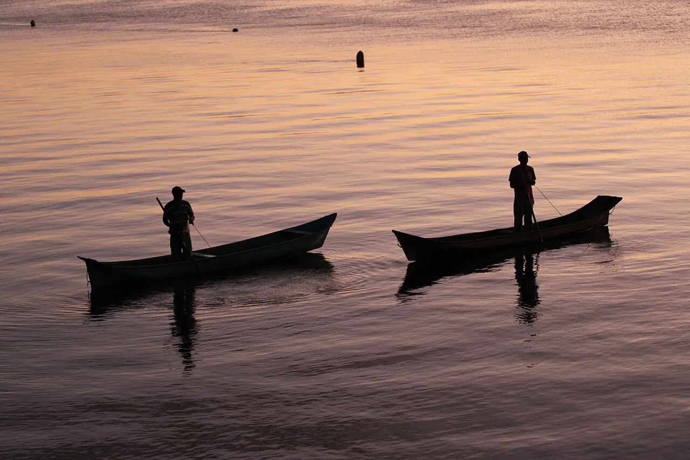
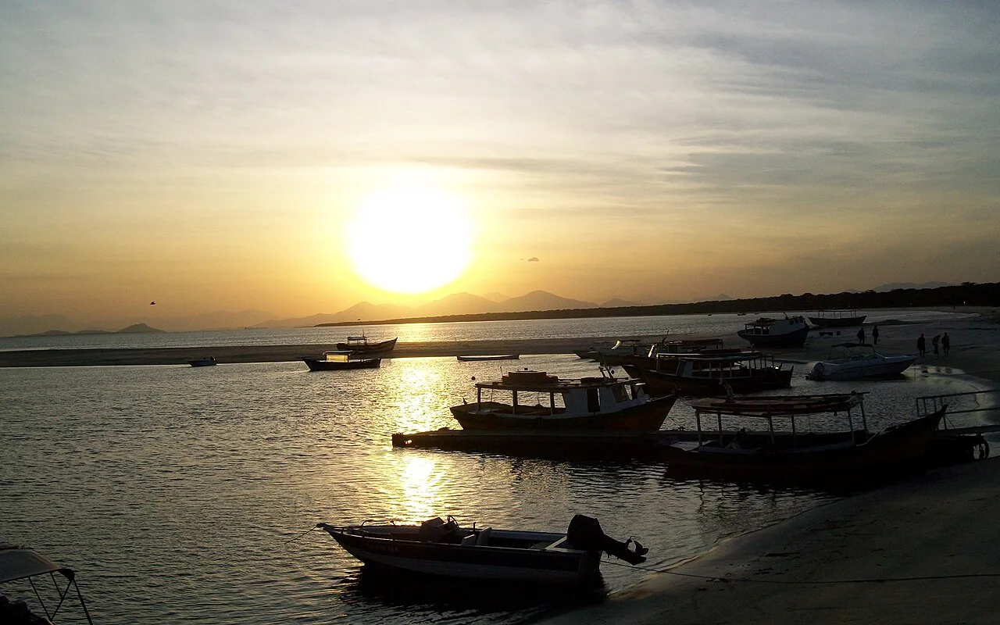

Neste estudo, relacionamos a pesca artesanal aos movimentos do corpo e aos cuidados necessários para realizar uma atividade que exige força, coordenação e atenção ao ambiente. A pesca é trabalho, cultura e sustento; também é uma prática na qual músculos, articulações e sentidos atuam juntos, especialmente em embarcações e terrenos instáveis.
Pesca artesanal: muito mais que retirar o pescado da água
A pesca artesanal é uma atividade de pequena escala que pode reunir trabalho familiar, embarcações de pequeno porte, técnicas tradicionais e conhecimentos transmitidos entre gerações. Seu resultado pode alimentar as famílias, abastecer a comunidade ou ser comercializado.
Saberes de família
Conhecer redes, tarrafas, marés, locais de pesca e modos de trabalhar.
Relação com o ambiente
Observar os ciclos naturais e reconhecer a importância da conservação dos ambientes aquáticos.
Renda e alimentação
Participar do sustento familiar, do abastecimento local e da economia caiçara.
Nas comunidades de Piaçaguera e do entorno da Baía de Paranaguá, o estudo do corpo em movimento ajuda a reconhecer o esforço envolvido nesse trabalho e o valor dos conhecimentos dos pescadores e pescadoras.
Três movimentos presentes no dia a dia da pesca
Os encartes da pesquisa destacam o arremesso de tarrafa, a puxada de rede e a caminhada sobre trapiches ou pisos instáveis. Cada tarefa solicita capacidades físicas e grupos musculares diferentes.

Arremesso de tarrafa
O lançamento combina rotação do tronco, extensão dos braços, movimento dos ombros e transferência do peso entre as pernas.
- Capacidades físicas
- Coordenação motora, equilíbrio, mobilidade e flexibilidade.
- Músculos envolvidos
- Ombros, braços, antebraços, mãos e musculatura abdominal.

Puxada de rede
O recolhimento de redes e cordas envolve flexão dos cotovelos, trabalho das costas e dos ombros e estabilização do quadril e das pernas.
- Capacidades físicas
- Força, resistência, coordenação e estabilidade postural.
- Músculos envolvidos
- Costas, braços, mãos, pernas e região central do corpo.

Caminhada e trapiche
Caminhar sobre superfícies molhadas ou instáveis exige ajustes constantes do corpo e atenção à posição dos pés.
- Capacidades físicas
- Equilíbrio, força e percepção corporal.
- Músculos envolvidos
- Panturrilhas, quadríceps, pés, tornozelos e músculos estabilizadores.
As fotografias ilustram o contexto pesqueiro regional, enquanto os pictogramas destacam as regiões corporais envolvidas. São esquemas educativos, não instruções de execução nem diagnóstico.
O que significa exigência física?
A pesca artesanal demanda movimentos repetidos, trabalho muscular e atenção ao equilíbrio. Chamamos de movimentos sinérgicos a ação coordenada de diferentes músculos e articulações para executar uma tarefa.
Como o corpo trabalha em conjunto
- Ao lançar a tarrafa: tronco, ombros, braços e pernas participam do gesto.
- Ao puxar uma rede: a base das pernas e a região central do corpo ajudam na estabilidade.
- Ao ficar em pé na embarcação: o corpo realiza ajustes para acompanhar o movimento da água.
Por que o esforço merece cuidado?
- O trabalho pode alternar períodos parados e momentos de esforço intenso.
- Movimentos repetitivos e posturas desconfortáveis podem gerar sobrecarga.
- Vibração, balanço da embarcação e umidade podem aumentar as dificuldades.
Mapa visual: partes do corpo exigidas na pesca
As regiões destacadas ajudam a relacionar movimentos e músculos citados em nossa pesquisa.
Esquemas estilizados das regiões corporais, sem escala ou detalhamento anatômico clínico.
Alongamentos apresentados na pesquisa
Os encartes propõem movimentos suaves para ombros, punhos e tronco. Alongar não deve provocar dor, e cada pessoa precisa respeitar seus limites. A preparação para o trabalho também inclui mobilidade e aquecimento gradual.
Ombros
Braço cruzado à frente: aproximar um braço do peito com auxílio da outra mão, sem elevar o ombro.
Abertura do peito: levar os braços suavemente para trás, apenas até onde for confortável.
Punhos
Extensão: braço à frente, palma voltada para fora, alongando os dedos com delicadeza.
Flexão: braço estendido, palma para baixo e dedos apontados para o chão, sem forçar a articulação.
Tronco
Mobilidade suave: realizar movimentos leves, sem forçar a lombar.
Os encartes também apresentam extensões do tronco. Elas devem ser adaptadas conforme o conforto e a condição física de cada pessoa.
Atenção: os exemplos são educativos, não uma sequência obrigatória de exercícios. Em caso de dor, lesão ou limitação de movimento, a prática deve ser interrompida e avaliada por um profissional de saúde.
Quais riscos merecem atenção na pesca?
A pesquisa destaca possibilidades de lesões e acidentes relacionadas ao trabalho repetitivo, à manipulação de equipamentos e à exposição ao ambiente. Risco não significa que a lesão acontecerá, mas que vale adotar medidas de prevenção.
Esforço repetitivo
Movimentos contínuos de puxar redes, remar e carregar peso podem contribuir para dores e problemas musculoesqueléticos, como tendinopatias e LER/DORT.
Observar: punhos, ombros, cotovelos e coluna.Instrumentos e animais
Facas, anzóis, espinhas e ferrões podem causar cortes, perfurações e outros ferimentos durante a atividade.
Cuidar do manuseio dos equipamentos e do pescado.Sol, vento e umidade
Exposição prolongada ao sol pode favorecer queimaduras e danos à pele; vento, frio e umidade também tornam o trabalho mais exigente.
Usar proteção adequada e respeitar as condições climáticas.Quedas e instabilidade
Barcos em movimento, trapiches molhados, pedras e terrenos de mangue exigem cuidado com escorregões, batidas e quedas.
Priorizar equilíbrio, atenção ao piso e segurança.Cuidar de quem pesca também é valorizar a cultura caiçara
Ao observar os movimentos do trabalho pesqueiro, compreendemos que força e habilidade são acompanhadas de esforço, cansaço e riscos. Preservar a saúde de quem vive da pesca é importante para o bem-estar das famílias e para a continuidade dos saberes da comunidade.
Respeitar limites, distribuir cargas quando possível e observar sinais de cansaço.
Dar atenção à hidratação, à proteção solar, ao calçado e aos instrumentos de trabalho.
Dores persistentes, ferimentos e limitações de movimento merecem avaliação adequada.
A pesca artesanal exige muito mais do que força: ela reúne conhecimento, coordenação, resistência e respeito ao corpo e à maré.
Trabalho e referências
Professor: Diego Munhos de Melo. Estudante: Mayara. Turma: 2ª série B.
Materiais utilizados: documento escolar Pesca Artesanal e seis encartes temáticos enviados ao projeto, com textos sobre movimentos da pesca, exigência física, pesca artesanal, saúde, alongamentos e possíveis lesões.
Organizamos as explicações para leitura digital, relacionando os conteúdos de Práticas Esportivas e Saúde à pesca artesanal e aos modos de vida caiçaras. As fotografias são referências regionais e não registros da execução dos exercícios pela turma.